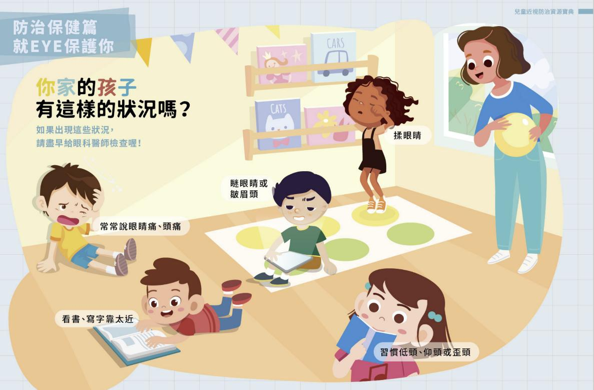

月號－哺乳育嬰站
月號－哺乳育嬰站隨著電子產品普及，幼兒視力問題日益嚴重。弱視、斜視及屈光不正（近視、遠視、散光）是常見問題，6歲前是治療斜視與弱視的關鍵期，而近視則為不可逆的疾病，若未及時控制，可能發展為高度近視，增加失明風險。研究顯示，戶外活動有助於預防近視，而長時間近距離用眼則會加速惡化。孩子一旦有近視，應就醫控制度數，直到青春期結束，度數才會較為穩定，預防成為高度近視。 |
| 留意幼兒視力異常警訊，若有視力不良的症狀，請儘早至眼科就診 |
1.瞇著眼睛看東西、常常揉眼睛。 |
|  |
| 近視的併發症: |
近視是一種疾病，近視相關的併發症有：白內障、青光眼、視網膜病變、視網膜剝離、黃斑部出血及黃斑部退化等，這些情況都不易治療，嚴重可能導致失明。 |
| 護眼6招，養成護眼好習慣 |
| 用眼習慣要養成 |
1.近距離用眼30分鐘休息10分鐘。 |
 |
視力是孩子認識世界的重要橋樑，良好的視力保健應從小開始。我們應密切觀察幼兒的用眼狀況，及早發現異常，並就醫檢查。平常多增加戶外活動，培養良好用眼習慣及定期視力檢查，有效預防視力問題，降低高度近視及併發症的風險。讓我們攜手守護孩子的明亮雙眼，為他們的未來打造清晰視界！ |
| 資料來源 1.護眼運動從小開始 2.兒童近視防治資源寶典 3.護眼行動GO有趣 |